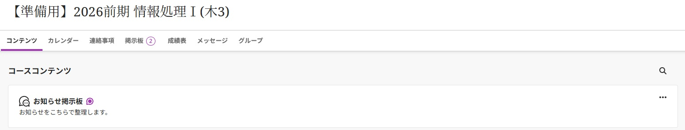

LMS（Learning Management System）は、授業資料の配布、課題の提出、テストの実施などを一括管理するためのオンラインシステムです。[web:42] 教員と学生が同じ画面を共有しながら学習を進められることが大きな特徴です。[web:25][web:26]
 典型的なLMSのコース画面のイメージ図。科目ごとに資料や課題が整理されている様子を表しています。このサイトでは、まずLMSの概要を説明し、次に代表的なLMSのひとつであるBlackboardについて紹介します。[web:25] さらに、現在多くの大学で導入が進んでいるBlackboard Ultraと従来版の違いを、学習者目線で整理します。[web:38][web:40]